Lethality - a measure of toxicity
home | Booster Warnings by Month | Moderna | Pfizer | Janssen | Moderna (outside USA) | Pfizer (outside USA) | Janssen (outside USA) | International Deadly Lots | 1st & 2nd Doses | Severe | Lethal | Size Matters | Lot Sizes | Time till onset | Second Peak | Lot Expiry Dates | RNA Degradation | Causality | All or Nothing | Clusters | Symptom | Paralysis | Children | Gender | States | Geography | Japan | Case Reports | Whistle Blowers | EMA Leaks | Video Library | Treatment | Background | Download Source Code | Data Cleaning | Donate
If this site is slow loading that's because over 1 million people are accessing it right now. Please use auxillary site HowBadisMyBatch.com which has been set up to cope with this overload. Thankyou.
What is Lethality ?
We measure the deadliness of snake venom by the % of those bitten who suffer a fatal outcome. Similarly - pharmaceutical companies determine the lethality of a dose by the % of recipients who die after taking it - this is the basis for the LD50 test.
The measure of toxicity here, is the % of VAERS reports that resulted in death for each lot. If a lot is highly toxic, it will generate far more reports of death for every 100 reports made, compared to a lot that is much less toxic.
Lethality = % of reports that are fatal = 100 x (deaths)/total number of reports
This measure could be extended to include disabilities and life threatening illnesses also. So instead of being called LETHALITY, it would be called % SEVERITY, where -
Severity = % of reports that are severe = 100 x (deaths + disabilities + life threatening events)/total number of reports
The Mathematical Proof
This measure is independent of batch size. Here is the mathematical proof -
For any given toxicity, the number of adverse reactions is directly proportional to number vaccinated. This can be written as -Number of adverse reactions = ka x number vaccinated, where ka is a constant
Similarly, for any given toxicity, the number of severe reactions (deaths, disabilities, life threatening illnesses) is also directly proportional to the number vaccinated. This can be written as
Number of severe reactions = ks x number vaccinated, where ks is a constant
It follows that -
severe reactions / total number of reports = ks/ka x number of vaccinated/number of vaccinated
and the number vaccinated cancels out, so has no influence on this ratio at all. The key point here is that this ratio is independent of batch size or of number of people vaccinated.
But what does the ratio indicate?
If a vaccine is more toxic, we would expect that more people taking it would be seriously harmed, consequently the % of reports of serious harm should increase. .So this ratio is an index of toxicity.
Accuracy
This ratio becomes more accurate the greater the denominator, so I only use it when the number of reports for any country or for any lot number is greater than 100, or ideally greater than 1000.
Just how severe are the COVID vaccines?
Method
I used VAERS data for USA only for the whole of 2021 up until January 12th 2022.. The data was just for Covid 19 vaccines. From this data I extracted all the lot numbers together with their associated number of adverse reports, deaths, disabilities and life threatening illnesses.
Results
The graph shows the severity ratio plotted for all Moderna, Pfizer and Janssen lots. As you can see, a greater % of Pfizer reports are severe, compared to Moderna or Janssen
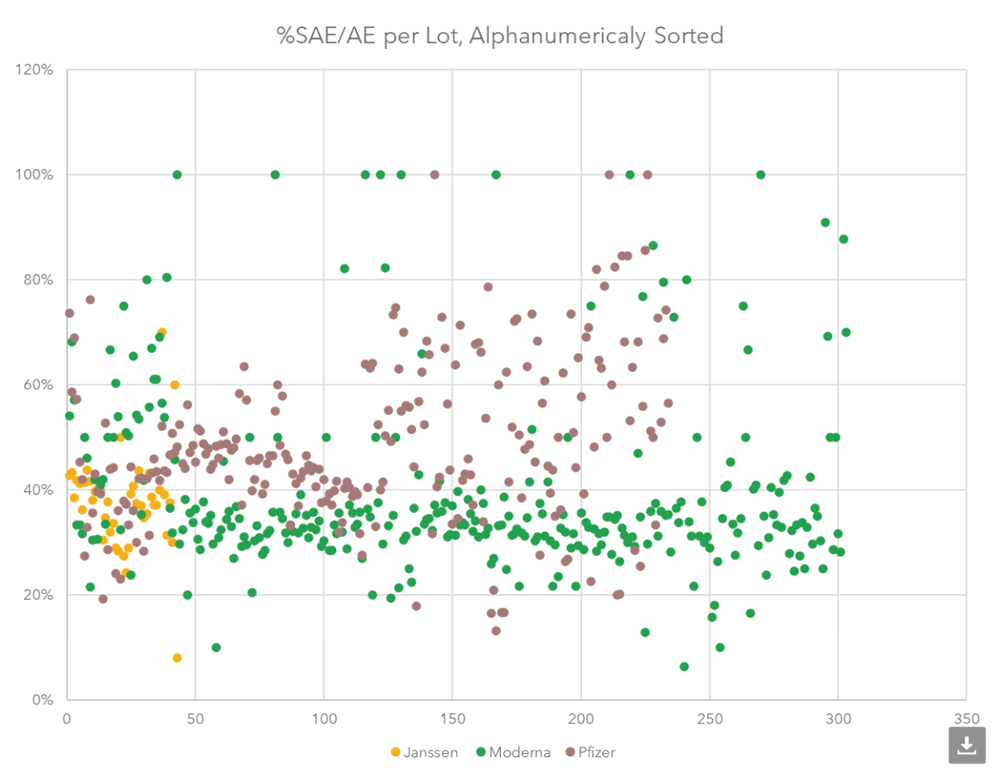
A report from Germany
More information can be found here - Germany Report
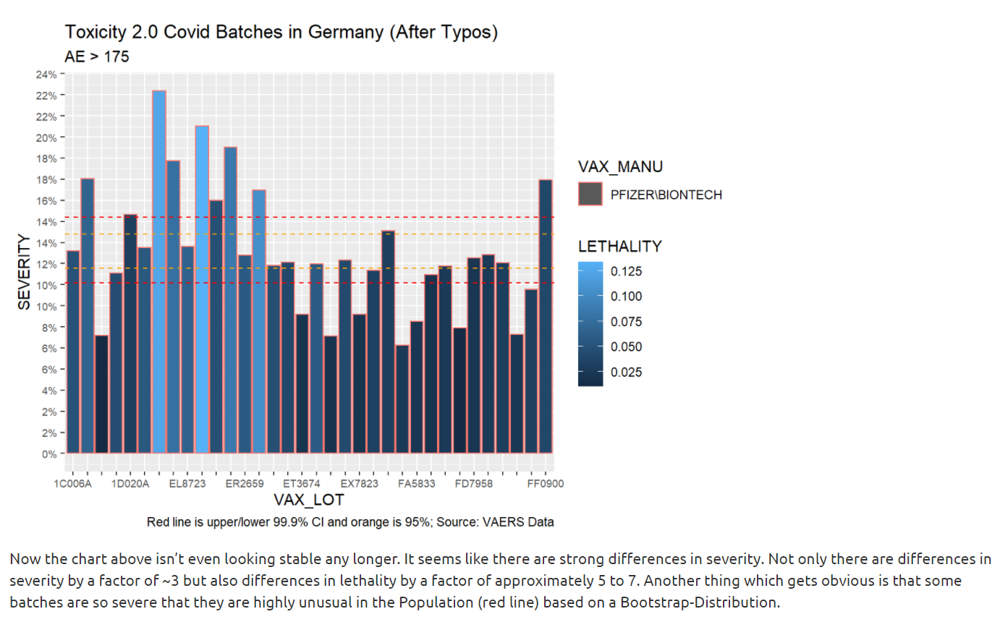
Here is a chart showing lethality of lots -
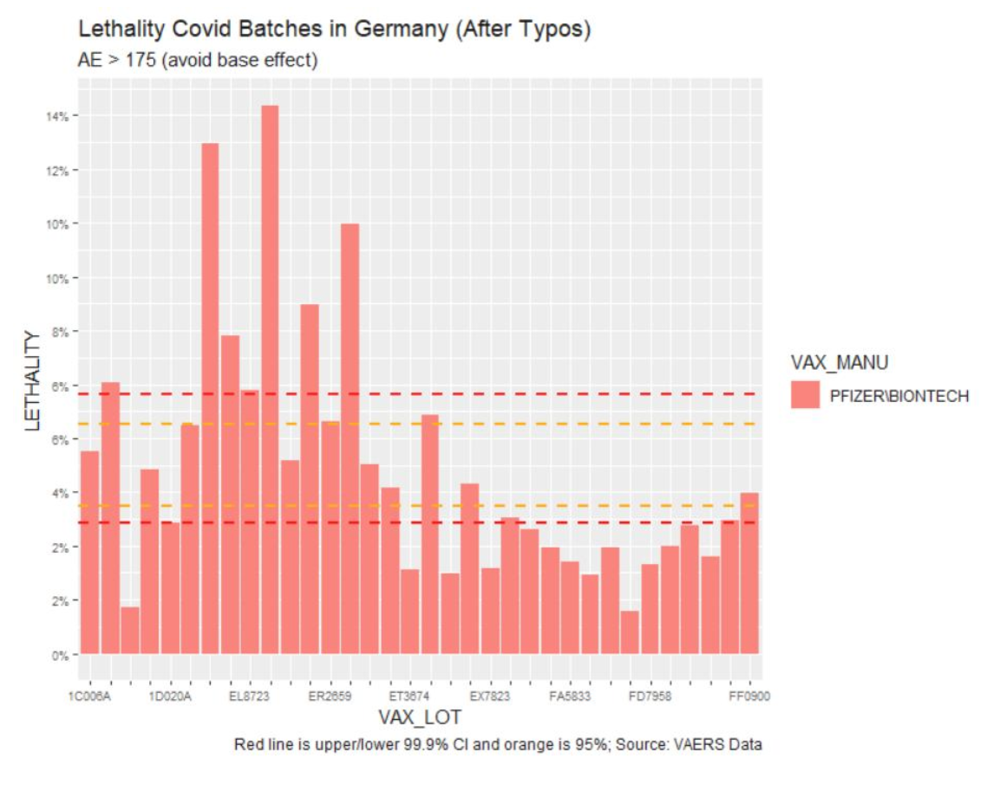
Variation in Lot Lethality in the USA - VAERS 2021 data
Below is a table showing the 200 lots with the highest number of adverse reports in VAERS. In each case I calculated the % of reports that resulted in death - and this was the measure of lethality.
We find is that some lots have only 1 death in 2000 reports (0.05%), whilst others lots have 120 deaths in 2000 reports - a 120 fold difference.
The % of reports for each lot resulting in death varies considerably, so there appears to be wide variation in toxicity between lots.
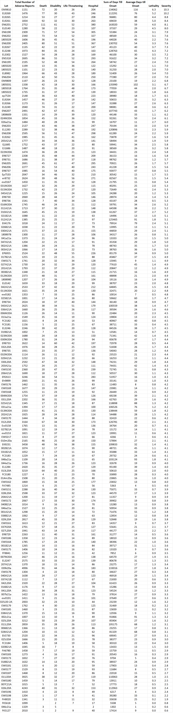
A Logical Argument
If all lots were equally toxic, and if each lot was given to the same number of people, then we would expect that there would be no significant difference in the number of adverse reactions between lots.
Let us assume, for a moment, that all lots are equally toxic. It follows that differences in the number of adverse reactions between lots must be due to differences in the number of vaccinated. We can therefore normalise for lot size by dividing by the number of adverse reactions.
It follows that we can normalise deaths also by dividing by the number of adverse reactions - which should produce the same number of deaths for each lot, IF they are all equally toxic. The fact that the number of deaths/number of adverse reactions varies by a factor of 120 indicates that they lots are not of equal toxicity at all.
The Common Sense Argument
Simply put, if a substance is more toxic there is greater probability of it causing a severe adverse event. Consequently, if we collect 1000 adverse event records for it, the % of those that are severe should be greater than if we did the same thing for a less toxic substance
This common sense argument holds, especially if we compare lots with equal numbers of adverse reports. Take a look at the chart above. EW0198 is at the bottom, with 1213 adverse reports and 1 death. Whilst EM9810 is at the top and generating 72 deaths.
Do more lethal lots produce a faster onset of illness or death?
We might suppose that a more lethal lot is more potent, and consequently will produce a faster reaction - leading to a quicker death. However, it is also possible that a more lethal lot remains in the body for longer - generating damage over a longer time.
In order to investigate this I used VAERS to calculate the lethality for each batch, then I calculated the average number of days till the onset of illness for each batch. Plotting Lethality on the y-axis against Days Till Onset on the x-axis suggested that the most lethal batches are active in the body for longer, and consequently produce death over a longer range of dates, whilst less lethal batches are active in the body for a shorter period of time.
It is as if the most lethal batches produce chronic effects, whilst the less lethal produce acute effects.
This finding suggests that the duration of the toxin within the body determines its lethality, and consequently increasing the rate of detox will diminish the lethality. (for example, by taking n-acetyl cysteine or glyceine)
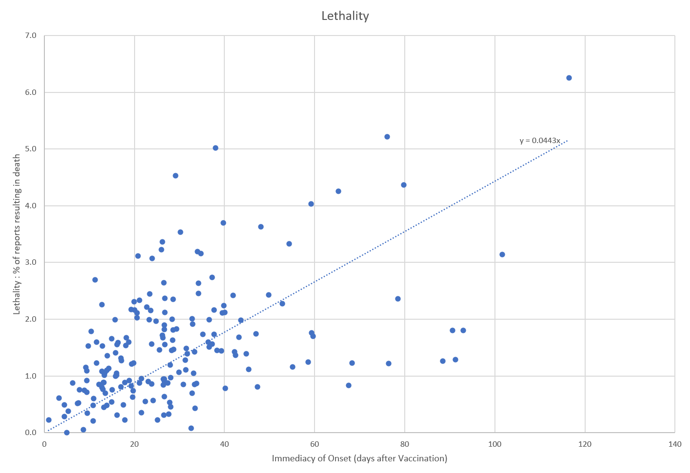
In the graph below you can clearly see that the range of days over which the young vaccinated die is mostly confined to within the first 30 days of vaccination - there is hardly any density of deaths above the blue line.
In sharp contrast, for those aged over 60, there is persistence of deaths over a much wider range of days - evidenced by the huge number of dots above the blue line.
This seems to show that the active ingredient responsible for death persists far longer in the bodies of the aged, causing more prolonged damage. It also suggests that in young people the active ingredient persists for a much shorter duration, possibly because it is metabolised and excreted faster, or because the immune system is stronger in the young.
The practical utility of this finding is that the probability of death following vaccination can be greatly reduced by upregulating the ability of the body to excrete the toxin. A method of doing this is described here - Upregulating natural metabolism of toxins"
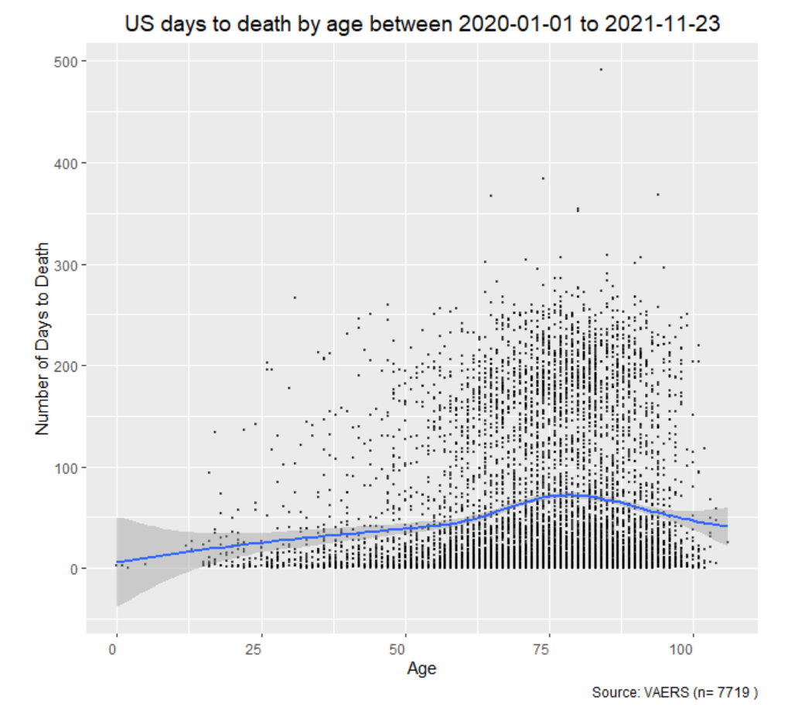
The Second Peak
It is at this point that I need to mention something curious. The first peak of deaths clusters strongly around the time of vaccination. It results from the acute, short-term effects of the vaccine.
But there is a second peak, beginning approximately 150 days after vaccination.
This peak results from the chronic long-term effects of the vaccine. It is only evident in those aged over 60. You can see the higher density in the graph above.
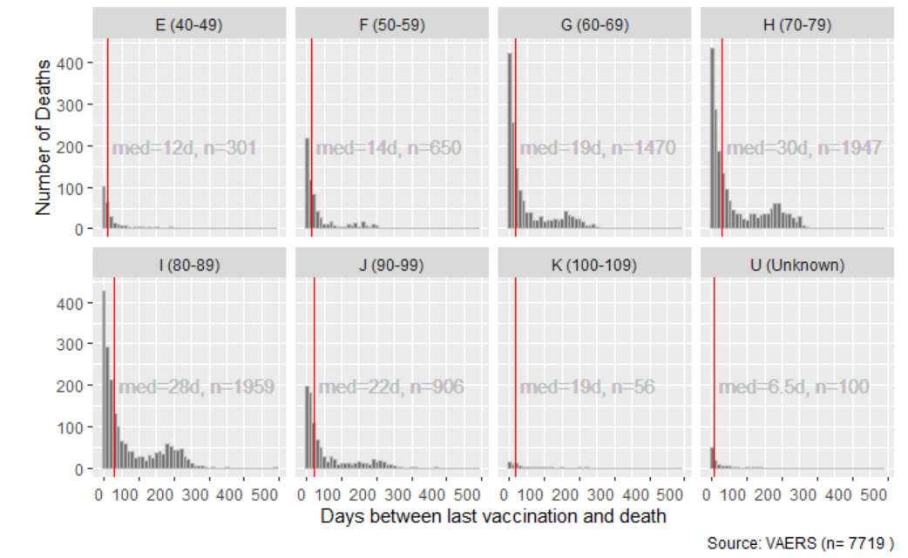
Decrease in Lethality over 2021
Here is a chart showing the number vaccinated on each day of 2021, as recorded in VAERS
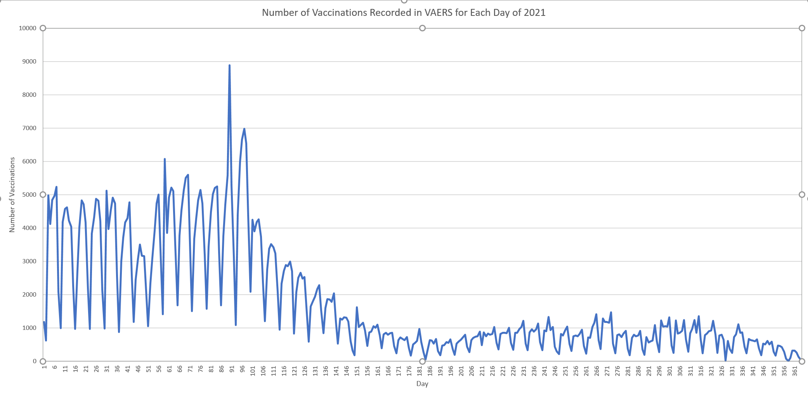
A minimum occurs every 7 days, because fewer people are vaccinated on Sundays
When we count the number of deaths associated with the vaccinations given on each day, we obtain this graph -
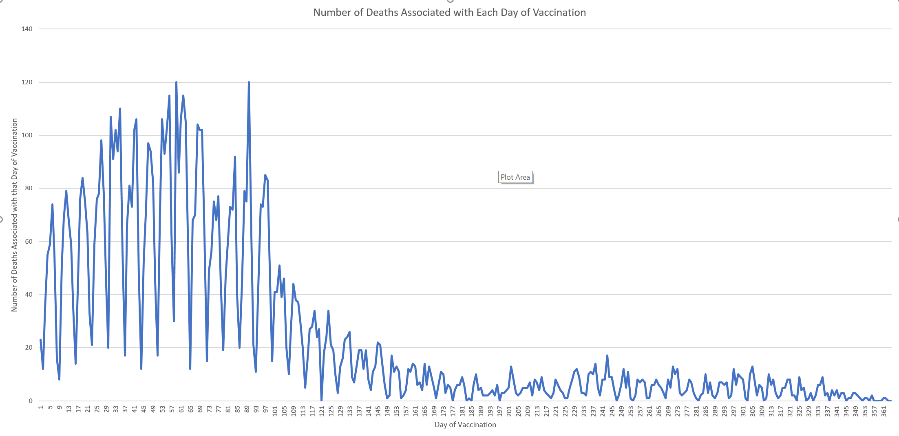
Notice again that the number of deaths associated with each day of vaccination also follows a periodic 7 day occilation.
When number of deaths associated with a particular day is divided by the number of vaccines given on that day, we obtain the lethality - a measure of toxicity. Graph 3 shows that lethality declines over 2021.
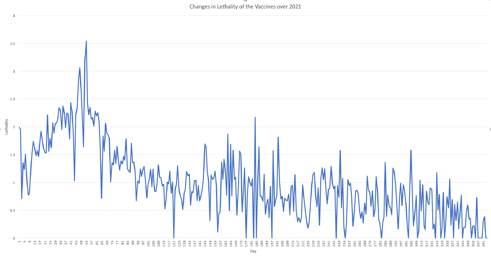
So the vaccines have actually decreased in toxicity over 2021. The vaccines were twice as lethal in the first quarter compared to the third quarter of 2021. They reserved the worst shots for the aged in the first quarter (eugenics/ cost saving on social care?)
Curious Distribution of Death
The deaths associated with the vaccines given on a particular day, do not necessarity occur on that day. Rather, these deaths are spread out over many days following vaccination. When we look at the actual dates of death and plot these on a graph for each day of 2021, we obtain the following -
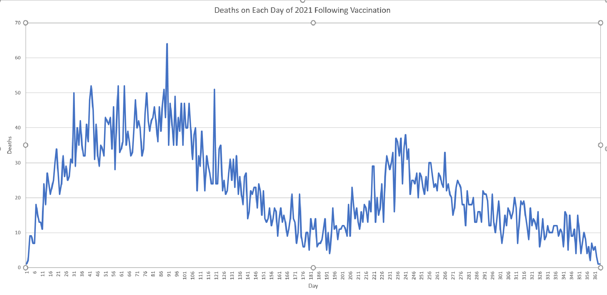
What can account for the rather large second peak of deaths? The deaths show a large bulge in the third quarter which is not expected, since we have seen that numbers vaccinated was falling, and so was toxicity.
The two peaks are out of phase by approximately 180 days
We saw on this page second peak that following the vaccination of the aged, there are two peaks, and the second peak starts 180 days after vaccination. I therefore propose that this large bulge in deaths is primarily the result of vaccines given in January, February and March. It is the second peak - 180 days after vaccination - the long-term effects of the vaccine.
Contact
covidscienceteam@protonmail.com
Created by Craig Paardekooper ©2021